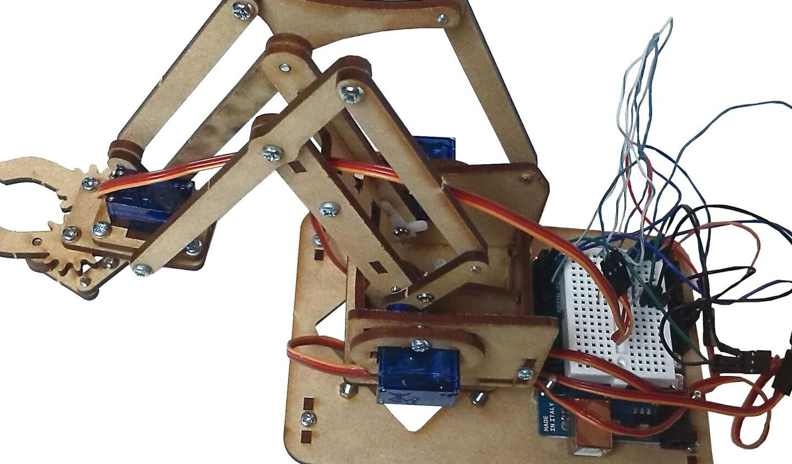

Explora mi trabajo en imágenes

Sistema de Riego Automático
Automatización de riego con sensores de humedad utilizando Arduino.

Brazo Robótico con Arduino
Desarrollo de un brazo robótico controlado con Arduino.

Robot con Sensor Ultrasonico
Robot controlado con Arduino y sensor ultrasónico para evitar obstáculos.

Programa de Contabilidad en Java
Desarrollo de un programa de contabilidad utilizando Java en NetBeans.

Modelo SVM para Detección de Billetes Falsos
Implementación de un modelo de SVM para detectar billetes falsos utilizando aprendizaje automático.

Análisis y Comparación de Tecnologías Big Data para Redes Sociales: Caso Twitter
Análisis de Big Data aplicado a redes sociales como Twitter para entender patrones y comportamientos.